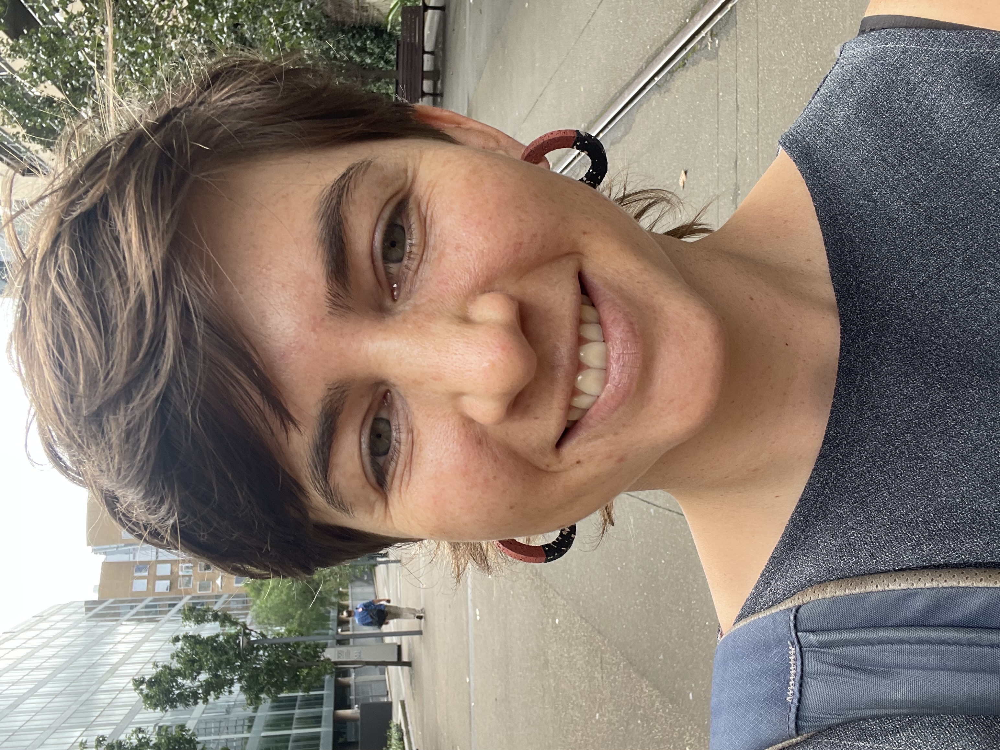
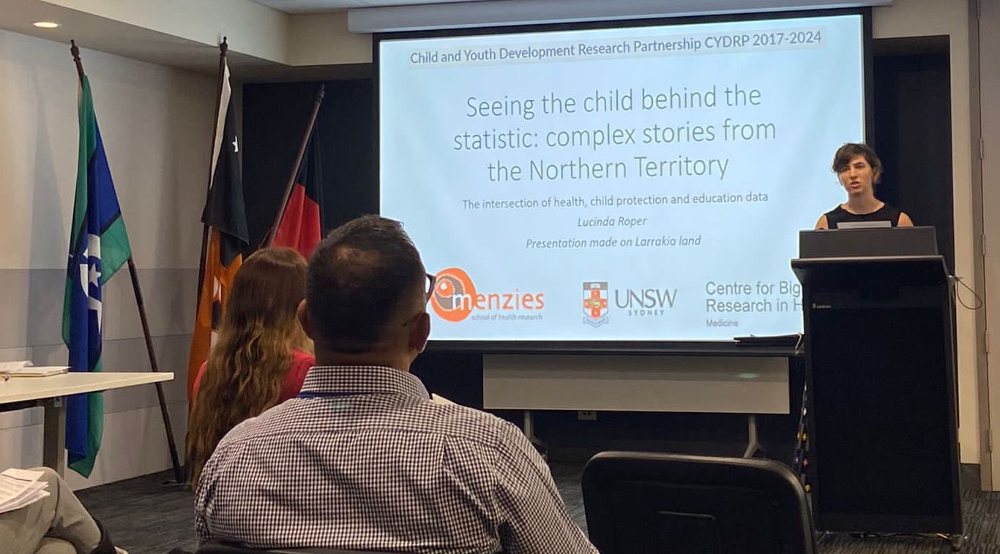
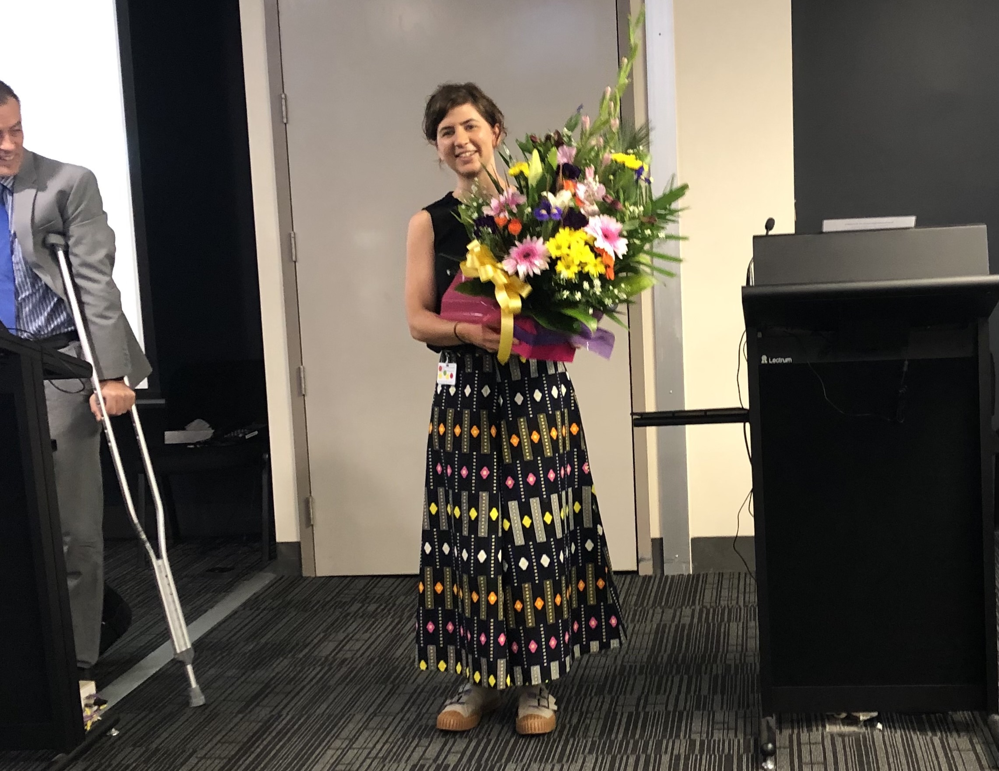

Studying Health Data Science as a junior doctor

Lucinda is a HDS Masters graduate from 2022. She has spent the last 4 years as a junior doctor in NSW and the NT working toward becoming a physician. She loves considering the questions that can be answered using the ‘big data’ we have available to us and hopes to have a combined clinical and research career.
Combining work and study early in the degree
I commenced the HDS Masters in 2019, while working as a junior doctor. Prior to this, I had completed an undergraduate research year with the Center for Big Data Research in Health as part of my medical degree, which I really enjoyed and I was interested in maintaining options for non-clinical work. The main advice I have for any junior doctors doing the course is that ward work is unpredictable, and a work-study schedule that looks reasonable on paper can be easily thrown off by unrostered overtime! I found it much easier to manage the course on shiftwork-based terms. My experience was that I could only ever manage one subject at a time, except for one term which was 4 days on, 4 off, 4 nights, 4 off, when I did two subjects.
Dissertation research project experience: being integrated into a research organization and working across institutions
I really wanted the opportunity to fully focus on my dissertation research project, so decided to take six months off work to do this. I also hoped to remain in Darwin, where I was living and working. I approached the Menzies School of Health Research in Darwin, and was introduced to Professor Steven Guthridge, who was open to formulating the project based on their current research areas that were relevant to the NT, and supervising my research project, along with co-supervision from a UNSW academic. I really loved the Machine Learning chapter of the course and so I approached Dr Oscar Perez-Concha, who agreed to co-supervise my project, which was fantastic.

Working at the Menzies School of Health Research, specifically within the Child and Youth Development Research Partnership (CYDRP) was a highlight of my experience. The team at Menzies were very generous in integrating me into their workplace and I felt like a valued member and contributor to their team. CYDRP also have an amazing resource for retrospective analysis: a population-level linked database spanning 14 different datasets.
Once I had completed the research project, I was fortunate to receive a doctors in training research award for a presentation on the project.

Lessons learned
Because of the opportunity for uninterrupted work, I delved deeply into the area of dimensionality reduction and clustering techniques using unsupervised machine learning. I had intended to have the project completed, and a manuscript submitted by the end of the six-month period. I found it hard to ‘draw the line’ and possibly delved too deeply into the subject matter, and instead had just completed a first draft at the end of the six-month period. Based on the amount of work done, there was possibly sufficient material for a second paper comparing clustering methodologies, however to make this paper relevant and concise, we elected to use 2 rather than all 6 of the various models that we had made. The main lesson for me was to set realistic expectations about what is achievable in a limited time frame, especially when you want to develop a deep understanding of new and complex subject matter. Perhaps this is an unavoidable trap for a junior researcher.
We submitted a manuscript to PLoS One in February 2022, a couple of months after completing the MSc Program in December 2021. Finding reviewers for the manuscript took some time because of the unusual combination of subject matter and analytical methods (early childhood development and using unsupervised machine learning). Revisions to the paper were made in mid-2022, based on reviewer feedback. Balancing this with full-time work and study for medical exams was a challenge; I am indebted to my supervisors/co-authors for their help with revisions. The final manuscript, titled Complex early childhood experiences: Characteristics of Northern Territory children across health, education and child protection data1 was accepted for publication at the end of 2022.
Footnotes
Roper L, He VY, Perez-Concha O, Guthridge S. Complex early childhood experiences: Characteristics of Northern Territory children across health, education and child protection data. PloS one. 2023 Jan 19;18(1):e0280648. https://doi.org/10.1371/journal.pone.0280648↩︎